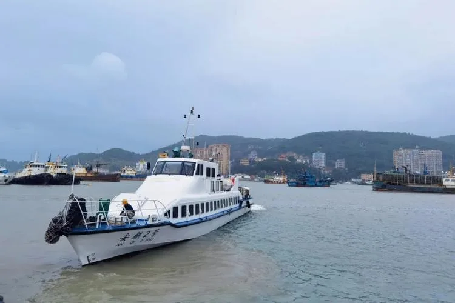

黄岐至马祖航线迎台胞返乡祭祖高峰
Huangqi-Matsu Ferry Route Sees Peak Taiwan Compatriots Returning for Ancestor Veneration

中文原文
2025-04-04 18:28:56 来源：央视新闻 责任编辑：李雅兰
随着清明节的到来，很多台胞纷纷回到大陆祭祖。这两天，福建福州的连江黄岐至马祖白沙客运航线，迎来台胞返乡祭祖客流高峰。
4月3日上午，随着3艘客渡陆续抵达福建连江黄岐港客运码头，300多名台胞回到大陆返乡祭祖。
台胞 陈一惠：带小朋友回来扫墓，祭拜一下祖先，让小孩记住自己的根在哪里。
清明节到来，黄岐至马祖“小三通”航线旅客人数呈增长之势，4月3日更是达到了峰值。为应对客流高峰，航班适时扩容，临时加开两趟航班。
福州边检站执勤三队副队长 王海钦：提前预测高峰流量，及时增派警力，加开通道，进一步优化服务举措，确保旅客快速有序通关。
English translation
April 4, 2025, 18:28:56 / Source: CCTV News / Editor: Li Yalan
As Tomb-Sweeping Day approaches, many Taiwan compatriots are returning to the Chinese mainland to venerate their ancestors. In recent days, the Huangqi (Lianjiang, Fuzhou)-Matsu Baisha passenger ferry route has experienced a peak in Cross-Strait travel for this purpose.
Matsu, administered by Taiwan province, is geographically close to the Chinese mainland. The Huangqi-Matsu route is a key part of the Mini Three Links, which is a Cross-Strait initiative facilitating direct people-to-people exchanges, trade, and transportation between the mainland and Taiwan region’s outlying islands.
On the morning of April 3, three passenger ferries arrived at Huangqi Port Passenger Terminal in Lianjiang, Fujian, carrying over 300 Taiwan compatriots back to the mainland for ancestor veneration rituals.
Taiwan compatriot Chen Yihui shared, “I brought my children back to sweep tombs and pay respects to our ancestors, so they can remember their roots.”
With the festival’s arrival, passenger numbers on the Huangqi-Matsu “Mini Three Links” route have surged, reaching a record high on April 3. To cope with the peak travel demand, ferry operators temporarily added two extra trips.
“By forecasting peak traffic in advance, we promptly deployed extra personnel, opened more inspection channels, and optimized services to ensure smooth and efficient clearance for travelers.” said Wang Haiqin, Deputy Team Leader of the Third Duty Team at Fuzhou Entry-Exit Border Inspection Station.